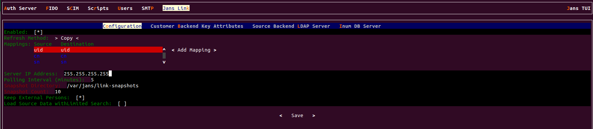

Jans LDAP Link#
The Jans LDAPLink synchronization service updates the Janssen User Store when authoritative data is managed in an external LDAP store.
Installation#
The API is available as the Jans Link component of Jans Server.
Upon installation you can select if you want
to install this Service along with other Janssen Server components. Post
installation, to add Jans-Link component, use the following:
python3 /opt/jans/jans-setup/setup.py --install-jans-link`
Jans LDAP link gets installed as a service that can be managed using below commands.
To Start Jans-Link
systemctl start jans-link
To check status
systemctl status jans-link
To Stop Jans-Link
systemctl stop jans-link
Jans LDAP Link Configuration#
The Janssen Server provides multiple configuration tools to perform these tasks.
Use the command line to perform actions from the terminal. Learn how to use Jans CLI here or jump straight to the Using Command Line
Use a fully functional text-based user interface from the terminal. Learn how to use Jans Text-based UI (TUI) here or jump straight to the Using Text-based UI
The Jans link does not have a REST API.
Using Command Line#
Janssen Server CLI provides the number of operations and metadata information about the Jans LDAP link.
To see Jans-Link info using Jans CLI
jans cli --info JansLinkConfiguration
Operation ID: get-jans-link-properties
Description: Gets Jans Link App configuration.
Operation ID: put-jans-link-properties
Description: Updates Jans Link configuration properties.
Schema: Jans Link Plugin:AppConfiguration
Gets Jans Link App configuration#
To see Jans Link properties, use the below command. Use the operation ID
get-jans-link-properties to get all the Jans link on the Janssen Server.
jans cli --operation-id get-jans-link-properties
{
"inumConfig": {
"configId": "local_inum",
"bindDN": "@ldap_binddn@",
"bindPassword": "@ldap_bind_encoded_pw@",
"servers": [
"@ldap_hostname@:@ldaps_port@"
],
"maxConnections": 10,
"useSSL": true,
"baseDNs": [
"ou=link,o=site"
],
"useAnonymousBind": false,
"enabled": true,
"version": 0,
"level": 0
},
"targetConfig": {
"maxConnections": 2,
"useSSL": false,
"useAnonymousBind": false,
"enabled": false,
"version": 0,
"level": 0
},
"ldapSearchSizeLimit": 1000,
"keyAttributes": [
"uid"
],
"keyObjectClasses": [
"gluuPerson"
],
"sourceAttributes": [
"mail",
"cn",
"sn"
],
"updateMethod": "copy",
"defaultInumServer": true,
"keepExternalPerson": true,
"useSearchLimit": false,
"attributeMapping": [
{
"source": "uid",
"destination": "uid"
},
{
"source": "cn",
"destination": "cn"
},
{
"source": "sn",
"destination": "sn"
}
],
"snapshotFolder": "/var/jans/link-snapshots",
"snapshotMaxCount": 10,
"baseDN": "o=jans",
"personObjectClassTypes": [
"jansCustomPerson",
"jansPerson",
"eduPerson"
],
"personCustomObjectClass": "jansCustomPerson",
"allowPersonModification": false,
"supportedUserStatus": [
"active",
"inactive"
],
"metricReporterInterval": 0,
"metricReporterKeepDataDays": 0,
"disableJdkLogger": true,
"cleanServiceInterval": 0,
"linkEnabled": false,
"serverIpAddress": "255.255.255.255",
"lastUpdate": "2023-07-05T18:27:28",
"lastUpdateCount": "0",
"problemCount": "3",
"useLocalCache": false
}
Updates Jans Link configuration properties#
Let's update the Jans Link configuration properties using the Janssen CLI command line.
To perform the put-jans-link-properties operation, we have to use its schema.
To get its schema:
jans cli --schema "Jans Link Plugin:AppConfiguration"
You can also use the following command for Jans Link Plugin:AppConfiguration a schema example.
jans cli --schema-sample "Jans Link Plugin:AppConfiguration"
- Get Jans Link App configuration and store it into
a file for editing. The following command will retrieve the existing Jans link in the schema file.
Command
jans cli -no-color \ --operation-id get-jans-link-properties > /tmp/update-jans-link.json - Edit and update the desired configuration values in the file while keeping other properties
and values unchanged. Updates must adhere to the
Jans Link Plugin:AppConfigurationschema as mentioned here. - We have seen in the jans link
maxConnections:10anduseSSL:true. We are going to update it withmaxConnections:15anduseSSL:false.CommandUpon successful execution of the update, the Janssen Server responds with updated configurationjans cli --operation-id put-jans-link-properties \ --data /tmp/update-jans-link.json
Using Text-based UI#
Start TUI using the command below:
jans tui
Navigate to Jans Link -> Configuration to open the screen as shown
in the image below.

The section below covers Jans LDAP link configuration in more detail.
Configuration Using#
In order to configre Jans LDAP Link, the administrator needs to know various
values of the backend LDAP(or Active Directory). For example, host & port,
bindDN, user information, password, Objectclasses, attributes which
will be pulled, etc.
In addition, the administrator needs to know generic information about the
Jans Server's LDAP. By default, the deployer can use localhost:1636,
cn=directory manager, password chosen during installation,
ou=people,o=site as server information, bindDN, bindDN password and
baseDN respectively.
Let's move forward with the Jans-Link setup.
Enabled: Enable your Jans-link configuration. TUI-
Refresh Method: There have two refresh modecopyandVDS. If the organization has any kind of Active Directory/LDAP server, they are strongly recommended to use the Copy Method from the drop-down menu. Any organization with a database like mysql can use the VDS method. This option can be enabled via the drop-down menu in Refresh Method option. -
Mapping: In the source attribute to destination attribute mapping field, you can enter the source attribute value on the left, and the destination attribute on the right. In other words, you can specify what the attribute is on the backend in the left field, and what it should be rendered as when it comes through the Jans Server in the right field. -
Server IP address: Proviede your server IP address. -
Polling Interval (minutes): This is the interval value for running the link mechanism in the Jans Server. It is recommended to be kept higher than 15 minutes. -
Keep External Persons: Enable it during Jans-Link setup. This will allow your default user 'admin' to log into Jans Server after initial linking iteration. If you do not enable 'Keep External Person', your 'admin' user including all other test users will be gone after first linking iteration. -
Snapshot Directory: Every cycle of Jans Server link cycle saves an overall snapshot and problem-list record on a specified location. This is where the Jans Server Administrator can specify the location. You can easily decide whether link synchronizes all users or not. Generally the rejected users are enclosed in the problem-list file. -
Snapshot Count: This defines the total number of snapshots that are allowed to be saved in the hard drive of the VM. It is recommended to be kept to 10 snapshots. -
Load Source Data withLimited Search
Customer Backend Key Attribute#
-
Key Attributes: This is the unique key attribute of backend Active Directory/LDAP Server such as MikeAccountname for any Active Directory. -
Key Object Classes: This contains theObject Classesof the backend Active Directory/LDAP which has permission to talk to Jans Server link such as person, organizationalPerson, user etc. -
Source Attributes: This contains the list of attributes which will be pulled and read by the Jans Server. -
Custom LDAP Filter: If there is any custom search required, this filtering mechanism can be used such as "sn=*" whereas the value of this field ensures that every user must contain an attribute namedSN.
Source Backend LDAP Server#

This section allows the Jans Server to connect to the backend Active Directory/LDAP server of the organization.
Add new Source LDAP Config
-
Name: Inputsourceas the value -
Bind DN: This contains the username to connect to the backend server. You need to use full DN here. As for example,cn=jans,dc=company,dc=org. -
Bind Password: This is your server password. -
Max Connections: This value defines the maximum number of connections that are allowed to read the backend Active Directory/LDAP server. It is recommended to keep the value of 2 or 3. -
Server:Port: provide your server name and port number. -
Base DNs: This contains the location of the Active Directory/LDAP tree from where the Jans Server shall read the user information. -
Use SSL: Use this feature if the backend server allows SSL connectivity. -
Enable: This check-box is used to save and push the changes. Do not use this unless the server administrator has entered all the required values.
Inum DB Server#
This section of the application allows the server administrator to connect to the internal LDAP of the Jans Server. As Jans Server administrator, you do not need to insert anything here in this section as new Gluu Server versions automatically populates this for you (unless you try to manually configure it anyway).
Things To Remember#
The Jans Server supports two LDAP modes:
- Authentication
- Identity mapping
To synchronize user accounts from an external LDAP directory server, you can use the built-in Jans CLI or Jans TUI features for Service Link, which supports mapping identities from one or more source directory servers.
After configuring Jans Link, you should give it some time to run and populate the LDAP server. Here are some tips before you get started:
-
Make sure you are using LDAP authentication
-
Check the snapshots folder to see if files are being created.
-
Use the Jans TUI to browse users.
-
Use the command ldapsearch to check to see if results are starting to come in. The following command will search for the total number of users in the Jans LDAP:
/opt/opendj/bin/ldapsearch -h localhost -p 1636 -Z -X -D "cn=directory manager" -w <pass> -b "ou=people,o=DA....,o=jans" dn | grep "dn\:" | wc -l
Try to log in with one of these users. We assume that you have also set up your Jans Server to use the correct LDAP server for authentication.
Want to contribute?#
If you have content you'd like to contribute to this page, you can get started with our Contribution guide.